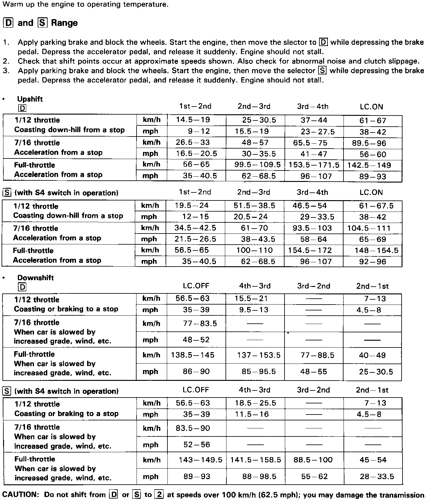
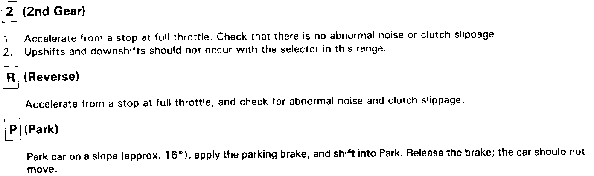

Road Test
Road TestNOTE: After transmission is installed:
^ Make sure the floor mat does not interfere with accelerator pedal travel. Fully depress accelerator pedal and check to make sure the throttle lever is fully opened.
^ Release the accelerator pedal and check both inner control cables to be sure they have slight play.

